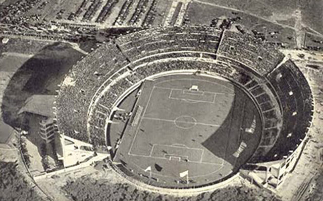

Las canchas de River Plate
El Monumental fue inaugurado en 1938. Pero, para llegar a esta cancha definitiva, el club pasó por varias otras, localizadas en distintos barrios de la Ciudad, e incluso estuvo durante un breve tiempo en una de Sarandí, provincia de Buenos Aires, del otro lado del riachuelo. Porque River Plate nació en el barrio de La Boca, en 1901, unos años antes de que se fundara el club Boca Juniors. Por eso, el primer estadio fue del lado este de la dársena sur, cerca de las Carboneras Wilson. Pero después el club fue desalojado un par de veces y se terminó mudando al norte del mapa de la Ciudad.
El 20 de mayo de 1923, se inauguró la cancha en Av. Alvear y Tagle. ¿Sabés cuántos socios tenía River en ese momento? ¡Apenas 5.070!. Pero al tiempo, el estadio quedó chico y fue entonces cuando llegó a su ubicación actual. El 25 de mayo de 1935 se puso la piedra fundacional del Monumental y fue inaugurado oficialmente el 26 de mayo de 1938. En noviembre de 1986, lo rebautizaron con el nombre de Antonio Vespucio Liberti, cuatro veces presidente de River y quien gestó su construcción.
